גם המדריך הזה אינו עוסק בפרטיות ובאבטחת מידע. הכל נמצא במדריך של Legal Mind על המעבר הבטוח למנוי Team, מדריך 1 סעיף 2.
מונחים נוספים שחובה להכיר לפני שתתחילו לקרוא את מדריך 2
המדריך הזה ממשיך את מדריך 1, ומניח שאתם מכירים כבר פרויקט, מאגר ידע ואת ההרשאות שנותנים בתוך פרויקט. את המונחים האלה לא נחזור ונגדיר כאן.
מה שנוסף הוא שכבה אחרת: המשרד. כאן כבר לא מגדירים מה מותר לעובד מסוים לעשות בתיק מסוים, אלא מגדירים בפעולה אחת מה יחול על כל עורכי הדין ועל כל העובדים במשרד - ולשכבה הזו יש מונחים משלה.
גם כאן אפשר לקרוא עכשיו, ואפשר לדלג ולהתחיל לעבוד. ואם תיתקלו בהמשך במונח שאינכם מכירים, תוכלו לחזור לכאן בלחיצה אחת: בצד המסך יש רשימה של כל פרקי המדריך, והפרק הזה הוא הראשון בה.
ואת ארבעת התפקידים במשרד תמצאו בפרק הבא, ולא כאן:
User, Admin, Owner ו-Primary Owner מוסברים שם במלואם: מה כל אחד מהם רואה במסך שלו, מה מותר לו לעשות, ואיך תבדקו איזה תפקיד יש לכם.
המונחים של עמוד הניהול, שבו יושבים כל המסכים במדריך הזה:
- Organization settings (עמוד הניהול של הארגון) · עמוד ניהול נפרד, שנפתח מתפריט החשבון. כל המסכים במדריך הזה יושבים בו.
- Back to app · הכפתור בראש הסרגל שם. הוא מחזיר אתכם לשיחות ולפרויקטים, ובלעדיו נראה כאילו העבודה נעלמה.
והמונחים של מה שמפיצים מעמוד הניהול לכל עורכי הדין:
- Organization skill (סקיל ארגוני) · שיטת עבודה שהמשרד הפיץ. היא מופיעה אצל כל עורכי הדין ומופעלת אצלם מעצמה, ואפשר לכבות אותה אצלכם אבל לא למחוק.
- Plugin (פלאגין) · חבילה שאורזת כמה סקילים יחד, ומגיעה למחלקה שלמה בפעולה אחת.
- Marketplace (מרקטפלייס) · הקטלוג שממנו עו"ד מתקין חבילה בעצמו, אם הרשיתם לו.
- Organization instructions (הוראות ארגוניות) · טקסט אחד שחל על כל שיחה של כל אחד במשרד. כללי בית, ולא שיטת עבודה.
- Ask Your Org (חיפוש ארגוני) · שאלה אחת שמחזירה תשובה מכל מקורות הידע המחוברים של המשרד.
ושומר סף אינו מונח של Claude אלא נוהל שלכם: אדם אחד שדרכו עוברים כל הסקילים לפני שהם מגיעים לכולם.
והמונחים שאומרים איזה רישיון יש לכל עובד, וכמה הוא משתמש:
- Seat (מושב) · רישיון של אדם אחד.
Standardהוא הרגיל,Premiumנותן מכסה גדולה יותר, ואפשר לשלב ביניהם באותו משרד. - Analytics (אנליטיקות) · מסך שמראה מי במשרד משתמש, כמה, ובאילו יכולות.
ולמי כל פרק מיועד:
המדריך הזה עוסק בהגדרות, וחלק מהן פתוחות רק למי שמחזיק תפקיד מסוים. החלוקה המלאה כתובה במסגרת שבראש המדריך, מתחת לכותרת.
ומה שחשוב לדעת כאן הוא שהחלוקה נוגעת לביצוע בלבד. הפרקים כתובים לכולם, וגם מי שהמסך לא ייפתח אצלו יבין בדיוק מה הוגדר במשרד ולמה.
מי במשרד רשאי לשנות הגדרות ב-Claude, ואיך בודקים אם זה אתם
כשמשרד עובר למנוי Team, כל עורכי הדין בו יושבים תחת חשבון Claude אחד, של המשרד - ולא כל אחד בחשבון Claude פרטי משלו.
ובחשבון ה-Claude של המשרד יש הגדרות שחלות על כל עורכי הדין בבת אחת - מי יכול להצטרף למשרד, אילו יכולות של Claude פתוחות לעורכי הדין, ומי משלם על המנוי.
ולא כל אחד רשאי לגעת בהגדרות האלה. לכל אדם במשרד יש אחד מארבעה תפקידים, וכל תפקיד רואה מסכים אחרים ורשאי לעשות דברים אחרים.
ולפרק הזה יש שני חלקים, כי לא כל מה שכתוב בו פתוח לכולם.
החלק הראשון הוא לכל עו"ד במשרד: איזה תפקיד יש לכם בחשבון ה-Claude של המשרד ואיפה בודקים את זה, ומה ההרשאות שיש לכל אחד מארבעת התפקידים - כולל מי רשאי לראות את חשבוניות המשרד ולשנות את אמצעי התשלום.
והחלק השני הוא למי שמוגדר Owner: לראות מי מעורכי הדין במשרד מחזיק היום בכל תפקיד, מי ממתין לאישור הצטרפות, ולקבוע איך אדם חדש נכנס למשרד - האם רק בהזמנה אישית, או שכל מי שיש לו כתובת מייל של המשרד יכול להיכנס לבד.
ומי שאין לו את התפקיד הזה מוזמן לקרוא גם את החלק השני, ולדעת מה קורה במשרד גם בלי שהמסכים ייפתחו אצלו.
ומתחילים בפעולה אחת, לפני כל הסבר: כדי לדעת מה מותר לכם, צריך קודם לדעת מה התפקיד שלכם. וזה מסך אחד.
שלב 1 · בודקים מה התפקיד שלכם:
בפינה השמאלית התחתונה של המסך ב-Claude כתוב שמכם. לוחצים עליו, ונפתח תפריט:
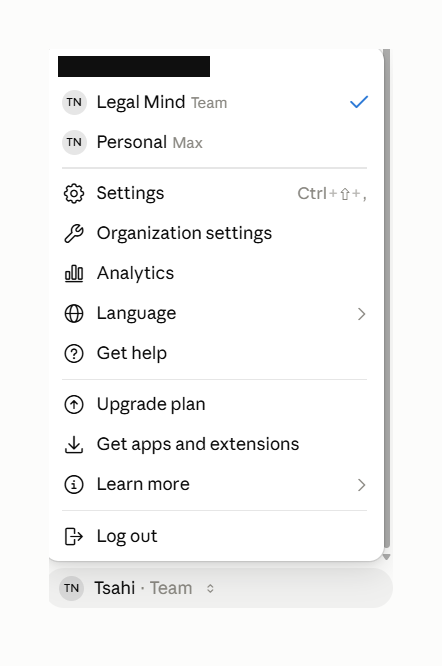
הדרך למסך: לוחצים על השם, ואז על Settings
- 1 השורה עם השם שלכם, בפינה השמאלית התחתונה של המסך. הלחיצה עליה פותחת את התפריט הזה.
- 2 השורה
Settingsבתפריט. לוחצים עליה, ונפתח חלון ההגדרות.
בתפריט הזה לוחצים על Settings, ונפתח חלון ההגדרות. בסרגל שבצידו כבר מסומן Account, וזה המסך שמולכם:
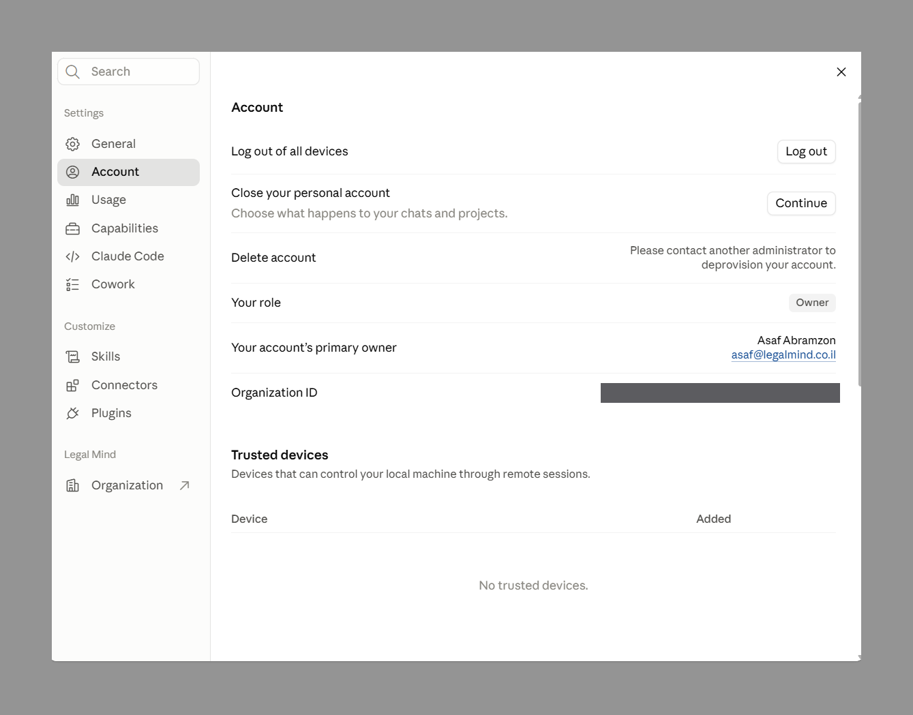
מסך Account
- 1 השורה Your role אומרת באיזה תפקיד אתם מסומנים במשרד. בצילום כתוב בה
Owner. ואם אצלכם כתוב שםUser, מסכי הניהול לא ייפתחו לכם, ואת ההגדרות שבפרקים הבאים יבצע מי שמסומןOwnerאוAdmin. - 2 השורה שמתחתיה אומרת מי מוגדר ה-Primary Owner של המשרד, ומופיעה בה כתובת המייל שלו. זה האדם שאליו פונים כשצריך הרשאה שאין לכם.
ואם כתוב שם User - מסכי ההגדרות של המשרד לא ייפתחו אצלכם, ואת הפעולות שבפרקים 01 עד 07 יבצע מי שמוגדר Owner.
באותו מסך כתוב גם מי זה: השורה שמתחת אומרת מי ה-Primary Owner של המשרד ומופיעה בה כתובת המייל שלו. פנו אליו, הראו לו את הפרק, ובקשו שיבצע מהחשבון שלו.
ואת המדריך עצמו אתם ממשיכים לקרוא. ההסברים כאן נכתבו לכולם, ופרקים 00, 08, 09 ו-11 מיועדים לכל עו"ד במשרד.
שלב 2 · נכנסים למסכי ההגדרות של המשרד:
באותו תפריט חשבון יש שורה בשם Organization settings. לוחצים עליה, ונפתח עמוד ניהול נפרד לגמרי.
תפריט החשבון פתוח
- 1 Organization settings. זו הדרך הקצרה - לחיצה אחת מכאן, במקום לעבור דרך Settings ולגלול עד למטה.
- 2 Analytics. גם לדשבורד השימוש יש קיצור מכאן, ונחזור אליו בפרק 07.
- 3 השורה שעליה לוחצים כדי לפתוח את התפריט, בפינה השמאלית התחתונה.
ובצד העמוד שנפתח יש סרגל ארוך, וזה הסרגל שילווה אתכם לאורך כל המדריך הזה. כל מסך שנציג כאן נפתח מלחיצה על אחד הפריטים שבו:
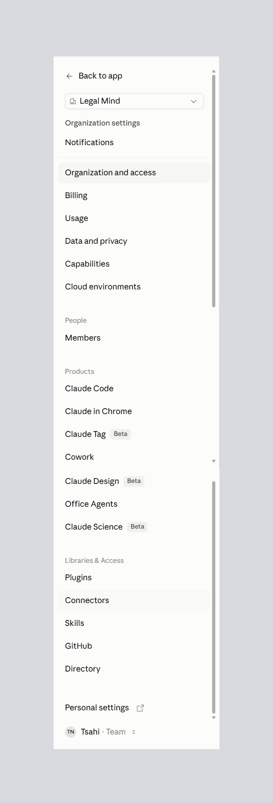
הסרגל של עמוד הניהול של הארגון, במלואו
- 1 הסרגל כולו. מכאן נפתח כל מסך שמוצג במדריך הזה, ומכאן והלאה נראה בכל פעם רק את החלק שממנו נכנסים למסך הנוכחי.
והוא ארוך מכדי להציג אותו שוב בכל פעם. ולכן מכאן והלאה, לפני כל מסך נראה רק את החלק שממנו נכנסים אליו, עם הפריט מסומן באדום - ומתחת לכל צילום כזה יש קישור שפותח את הסרגל כולו.
ובתפריט החשבון, זה שנפתח בלחיצה על שמכם, יש גם קיצור ל-Analytics - ואליו נגיע בפרק 07.
ומי שכבר נמצא בתוך Settings ימצא את אותו יעד גם בתחתית הסרגל שם, תחת השם Organization. שתי הדרכים מגיעות לאותו מקום.
ולמה יש שתי מערכות הרשאות נפרדות:
עכשיו, אחרי שראיתם את התפקיד שלכם, אפשר להסביר מה הוא אומר.
במשרד יש שתי מערכות הרשאות שאין ביניהן קשר.
האחת שואלת מה מותר לכם במשרד - לנהל חברים, לגשת לחיוב, לשנות הגדרות של כל הארגון. זה התפקיד הארגוני, וזה מה שראיתם על המסך.
והשנייה שואלת מה מותר לכם בתיק מסוים - רק לקרוא, או גם לשנות. זו הרשאת הפרויקט, וראיתם אותה במדריך 1.
ומה שזה אומר בפועל, ושווה לקרוא פעמיים:
עו"ד שמוגדר User יכול להיות עורך בפרויקט מסוים. התפקיד הארגוני שלו לא מונע את זה.
ו-Owner של הארגון אינו מקבל אוטומטית גישה לפרויקט פרטי של עובד. התפקיד הבכיר לא פותח לו דלתות בתוך פרויקטים של אחרים.
וזה נכון לגבי מה שרואים על המסך. יש ל-Primary Owner דרך אחרת להגיע למידע - בקשת ייצוא של תוכן החשבון - והיא מוסברת במדריך 1 פרק 01. זה עניין נפרד מהתפקידים.
מי שמערבב בין השתיים נותן הרשאות שלא התכוון לתת.
ומה מותר בכל אחד מארבעת התפקידים:
- Primary Owner · אחד בלבד בכל משרד, ובעל ההרשאה הגבוהה ביותר. הוא אינו חייב להיות אדם - משרד יכול לרשום לשם כך כתובת מייל כללית שלו, כדי שהתפקיד לא ייעלם עם עזיבתו של עובד.
- Owner · ניהול מלא של חשבון ה-Claude של המשרד, כולל מסך החיוב והתשלומים.
- Admin · מוסיף ומסיר אנשים מהמשרד ומשנה את הגדרות הארגון. בדרך כלל מנהל תפעול, או מי שאחראי על הכלים.
- User · כל מי שאינו מחזיק אחד משלושת התפקידים שלמעלה - כלומר רוב עורכי הדין במשרד. עובד ב-Claude בלי מגבלה, ואינו רואה בכלל את מסכי ההגדרות של המשרד.
שלב 3 · כיצד ניתן לראות מי מעובדי המשרד ומה התפקיד של כל אחד מהם ברמת ההרשאה:
כדי להגיע לרשימת העובדים, לוחצים בסרגל של עמוד הניהול על Members, והוא יושב תחת הכותרת האפורה People:
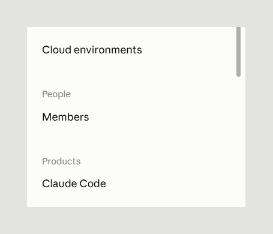
הדרך למסך החברים: הפריט Members בסרגל
- 1 הפריט
Members. לוחצים עליו, והמסך נפתח. הסרגל ארוך ומוצג כאן רק החלק הרלוונטי - הקישור שמתחת לצילום פותח את הסרגל כולו.
ואחרי הלחיצה נפתחת רשימת העובדים:
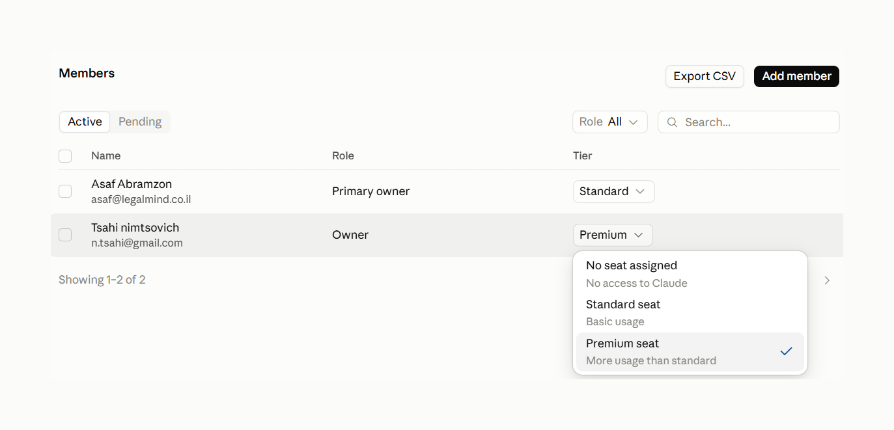
רשימת חברי הארגון
- 1 עמודת התפקיד. כאן רואים במבט אחד כמה בעלי
Ownerיש במשרד. - 2 חבר שסוג המושב שלו שונה מהשאר.
- 3 Back to app, בראש הסרגל. מסכי הארגון מחליפים את הסרגל הרגיל, וזו הדרך לחזור לשיחות ולפתוח שיחה חדשה.
ולפני שממשיכים, שימו לב לראש הסרגל. מסכי הארגון מחליפים את הסרגל הרגיל, ולכן השיחות והפרויקטים לא נראים כאן. Back to app מחזיר אתכם אליהם, ומשם גם פותחים שיחה חדשה.
ברשימה של שני אנשים רואים הכל במבט אחד. ברשימה של שלושים, לא. ולכן מעל הרשימה יש מסנן בשם Role: לוחצים עליו, מסמנים Owner, והרשימה מציגה רק אותם.
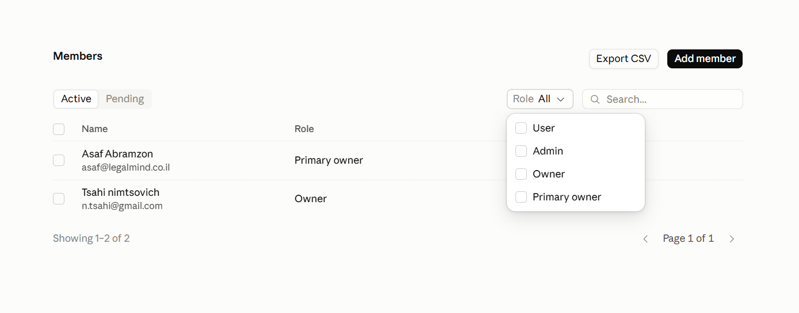
המסנן Role, פתוח
- 1 Role. לוחצים עליו, ונפתחת רשימה.
- 2 ארבעת התפקידים. מסמנים אחד, והרשימה מציגה רק אותו. במשרד של שניים זה מיותר, ובמשרד של שלושים זו הדרך היחידה לדעת כמה בעלי Owner יש לכם.
וזו בדיקה ששווה לעשות פעם ברבעון: כמה אנשים במשרד מחזיקים ניהול מלא, ומי הם.
ולחיצה על התפקיד של אדם פותחת כרטיס קטן ובו השם, המייל, התפקיד, סוג המושב, ומתי הוא הצטרף.
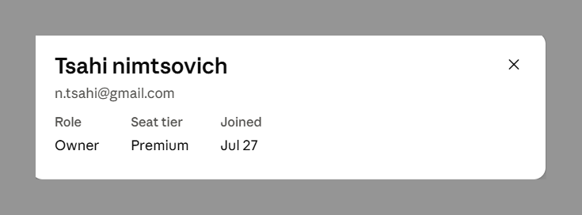
הכרטיס שנפתח בלחיצה על תפקיד
- 1 Role. התפקיד הארגוני.
- 2 Seat tier. סוג המושב, וזה כן ניתן לשינוי מהרשימה עצמה.
- 3 Joined. מתי האדם הצטרף, וזה שימושי כשעוברים על הרשימה ומחפשים מי כבר לא פעיל.
הכרטיס הזה מציג ואינו עורך. בבדיקה שערכנו ב-18 באוגוסט 2026 לא הייתה בו אפשרות לשנות תפקיד. מה שכן משנים מהמסך הזה הוא סוג המושב, מהבורר שבעמודה Tier.
ואם אתם מחפשים איפה משנים תפקיד ולא מוצאים: תפקיד גבוה משלכם אינכם יכולים לשנות, ואת שלכם אינכם יכולים להוריד. בשני המקרים פונים ל-Primary Owner.
ותאריך ההצטרפות שווה יותר ממה שהוא נראה. כשעוברים על רשימה של שלושים אנשים ומחפשים מי כבר לא פעיל, זו העמודה שמתחילים ממנה.
שלב 4 · בודקים מי ממתין להצטרף:
נשארים באותו מסך Members - לא צריך ללחוץ על שום דבר בסרגל. מעל הרשימה יש שתי לשוניות. Active היא מי שכבר בפנים, ו-Pending היא מי שהוזמן ועדיין לא הצטרף.
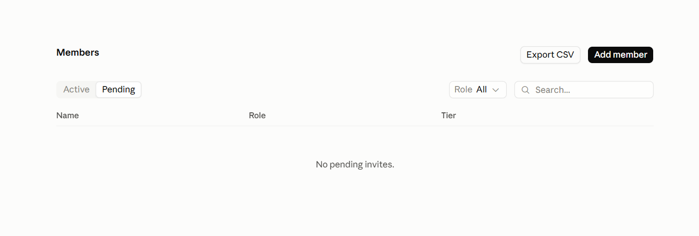
לשונית Pending, ריקה
- 1 Pending. לשונית נפרדת מ-Active, ומי שלא לוחץ עליה לא יודע שיש הזמנות ממתינות.
- 2 No pending invites. כך נראה מצב נקי, וכל שורה שתופיע כאן היא אדם שכבר תופס מושב.
- 3 Add member. מכאן מזמינים, ומה שנשלח מופיע בלשונית הזאת עד שהוא מתקבל.
וכשאין ממתינים כתוב שם No pending invites - וזה מה שאתם רוצים לראות אחרי ניקוי.
כי הזמנה ממתינה כבר תופסת מושב, גם לפני שהאדם הצטרף. כדאי לעבור על הרשימה מדי פעם ולנקות הזמנות ישנות, אחרת אתם משלמים על מושבים שאיש לא יושב בהם.
שלב 5 · קובעים איך בכלל נכנסים למשרד:
במסך אחד נקבע איך אדם חדש מצטרף למשרד, ובו שלוש הגדרות נפרדות שמשפיעות זו על זו. משרדים רבים מדליקים אחת מהן ומניחים שהשנייה מכסה אותם, וזה לא מה שקורה - נסביר בדיוק למטה.
וכדי להגיע אליו, לוחצים בסרגל של עמוד הניהול על Organization and access:
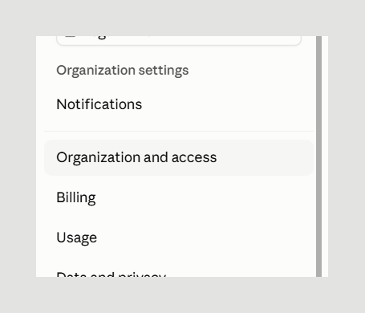
הדרך למסך ההצטרפות: הפריט Organization and access בסרגל
- 1 הפריט
Organization and access. לוחצים עליו, והמסך נפתח. הסרגל ארוך ומוצג כאן רק החלק הרלוונטי - הקישור שמתחת לצילום פותח את הסרגל כולו.
ואחרי הלחיצה נפתח המסך, ובתוכו גוללים עד האזור שנקרא User provisioning. יש בו שלושה דברים נפרדים, וצריך לקרוא את שלושתם יחד.
הראשון הוא איך אנשים מצטרפים. ברירת המחדל היא Invite only - מוסיפים אדם אדם בהזמנה. מתחתיה יש Just-in-time, שמצרף אנשים מעצמו כשהם נכנסים עם ההזדהות הארגונית של המשרד - כלומר אותה כניסה שבה הם נכנסים למחשב ולמייל של המשרד. האפשרות הזו אפורה ולא ניתנת ללחיצה כל עוד המשרד לא חיבר הזדהות כזו, וב-Claude היא נקראת SSO.
השני הוא קישור הצטרפות. מתג שמייצר קישור אחד, וכל מי שיש לו כתובת בדומיין המורשה ונכנס דרכו מצטרף למשרד.
והשלישי הוא אישור עובד חדש - תפריט שקובע אם מי שמצטרף ממתין לאישור של אדמין, או נכנס מעצמו.
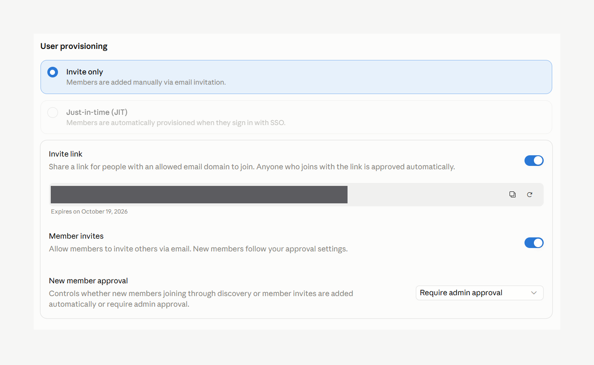
אזור User provisioning
- 1 Invite only, ומתחתיה Just-in-time האפורה. היא דורשת SSO, ולכן אינה זמינה כאן.
- 2 קישור ההצטרפות, והמשפט שלידו: מי שנכנס דרכו מאושר אוטומטית.
- 3 תאריך התפוגה של הקישור.
- 4 New member approval. הוא חל על גילוי ועל הזמנה של חבר, ולא על הקישור.
ולפני שתחפשו משהו שאינו קיים: ארבעת התפקידים האלה הם כל מה שיש. אי אפשר להגדיר תפקיד משלכם, ואי אפשר לתת למתמחה גישה חלקית לחלק מהמחלקות. מי שרוצה שליטה פרטנית כזו צריך מנוי Enterprise, שהוא המנוי הגדול של Anthropic לארגונים, ולא Team.
ומי יהיה Primary Owner - זו החלטה שכבר קיבלתם, והיא מוסברת במדריך של Legal Mind על המעבר הבטוח, מדריך 1 סעיף 3.
מי מאשר סקיל לפני שכל המשרד מקבל אותו
זה הפרק שבו המשרד מפסיק להיות אוסף של אנשים שכל אחד עובד בשיטה שלו.
כשכל עו"ד בונה לעצמו שיטה, יש במשרד שבע שיטות. וכשלקוח שואל למה התשובה שקיבל שונה ממה שקיבל שותפו, אין למי לענות. וכשיש סקיל ארגוני אחד יש שיטה אחת, ואם צריך לשנות אותה משנים במקום אחד.
השאלה המעשית היא מי מחליט מה נכנס לשם, וזה מה שנעשה בפרק הזה.
שלב 1 · נכנסים למסך הסקילים של הארגון:
כדי להגיע למסך הסקילים, גוללים בסרגל של עמוד הניהול למטה, עד הכותרת האפורה Libraries & Access - ולוחצים שם על Skills:
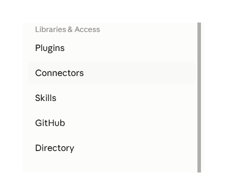
הדרך למסך הסקילים: הפריט Skills בסרגל
- 1 הפריט
Skills. לוחצים עליו, והמסך נפתח. הסרגל ארוך ומוצג כאן רק החלק הרלוונטי - הקישור שמתחת לצילום פותח את הסרגל כולו.
ואחרי הלחיצה נפתח מסך הסקילים של הארגון:
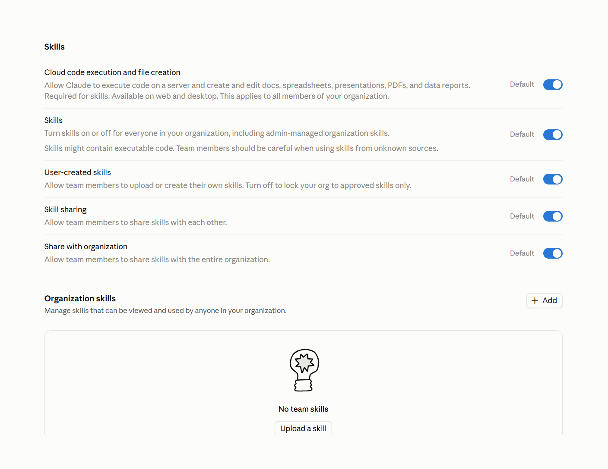
מסך הסקילים של הארגון
- 1 Cloud code execution and file creation. כתוב לידו שהוא נדרש לסקילים - בלעדיו לא יעבוד אף סקיל.
- 2 User-created skills. כתוב לידו שכיבוי שלו נועל את הארגון לסקילים מאושרים בלבד.
- 3 Share with organization. דלוק, וכתוב לידו Default - כלומר כך הגעתם. זה המתג שמאפשר לכל עו"ד לפרסם לכל המשרד.
- 4 Add. מכאן מעלה שומר הסף סקיל ארגוני.
- 5 No team skills. כך נראה המצב לפני שהועלה דבר.
שלב 2 · קוראים את חמשת המתגים, ומגלים שכולם דלוקים:
זה הרגע החשוב בפרק, וכדאי לעצור בו.
במסך הזה חמישה מתגים, וליד כל אחד מהם כתוב Default - כלומר כך הגעתם, בלי שאיש נגע. ואלה הם, מלמעלה למטה:
Cloud code execution and file creation · מאפשר ל-Claude להריץ קוד וליצור קבצים. כתוב לידו במפורש שהוא נדרש לסקילים - בלעדיו שום סקיל לא יעבוד, וזה ייראה כאילו ההעלאה שלכם נכשלה.
Skills · מדליק ומכבה סקילים לכל הארגון בבת אחת.
User-created skills · מאפשר לכל עו"ד להעלות או ליצור סקיל משלו. וכתוב לידו: כבו כדי לנעול את הארגון לסקילים מאושרים בלבד.
Skill sharing · מאפשר לעורכי דין לשתף סקילים זה עם זה.
Share with organization · מאפשר לעו"ד לשתף סקיל עם כל המשרד.
שלב 3 · מכבים את המתג שיוצר את שומר הסף:
נשארים באותו מסך Skills, ומכבים בו את המתג Share with organization.
מרגע זה אף עו"ד אינו יכול לפרסם סקיל לכל המשרד, וההפצה עוברת דרך מי שיש לו גישה למסך הזה.
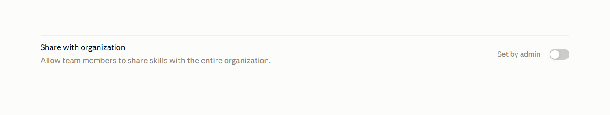
מתג השיתוף לארגון, אחרי שכיביתם אותו
- 1 המתג, כבוי. ושימו לב לתווית שלצידו: היא התחלפה מ-
Defaultל-Set by admin- המסך עצמו רושם שמנהל קבע את זה ביד. - 2 Share with organization, עכשיו כבוי. מרגע זה אף עו"ד אינו יכול לפרסם סקיל לכל המשרד.
- 3 Skill sharing, שנשאר דלוק. דרכו שומר הסף משתף את הסקיל עם שלושה קולגות לבדיקה, לפני שהוא עולה לספרייה הארגונית.
ושימו לב למה שקרה לתווית שלצד המתג: היא התחלפה מ-Default ל-Set by admin. כך אפשר לזהות במבט, בכל המסכים האלה, אילו הגדרות מישהו קבע ביד ואילו נשארו כברירת מחדל.
ואת User-created skills אפשר להשאיר דלוק. כיבוי שלו נועל את הארגון לסקילים מאושרים בלבד, וזו החלטה כבדה יותר - היא מונעת גם ניסויים אישיים.
שלב 4 · מעלים את הסקיל הארגוני הראשון:
גם זה נעשה מאותו מסך Skills שכבר פתוח. גוללים בו למטה עד האזור Organization skills, ושם יש כפתור Add.
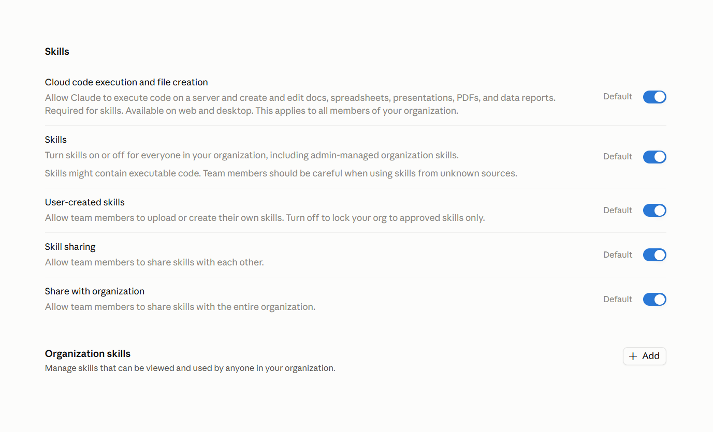
אזור Organization skills, והכפתור שפותח את ההעלאה
- 1 האזור
Organization skills. כתוב בו שכאן מנהלים את הסקילים שכל אחד בארגון יכול לראות ולהשתמש בהם. - 2 הכפתור
Add. לוחצים עליו, ונפתח חלון ההעלאה.
נפתח מסך העלאה שמצפה לקובץ zip.
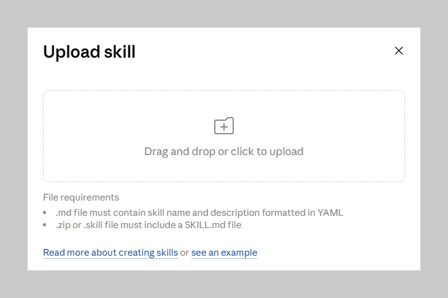
חלון Upload skill
- 1 אזור הגרירה. גוררים לכאן את הקובץ, או לוחצים ובוחרים אותו מהמחשב.
- 2 דרישות הקובץ, כתובות בחלון עצמו: קובץ
mdשבראשו שם ותיאור, או קובץzipאוskillשמכיל בתוכוSKILL.md.
וכשההעלאה מצליחה מופיעה הודעה. אל תניחו שהיא הצליחה בלי לראות אותה.
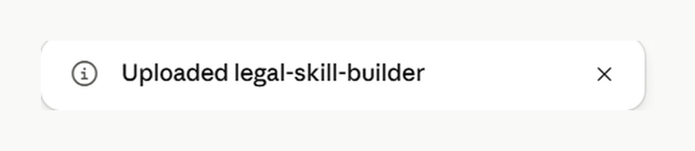
הודעת ההצלחה אחרי ההעלאה
- 1 ההודעה, והיא נושאת את שם הסקיל שהועלה -
Uploadedושם הסקיל. בלעדיה אל תניחו שההעלאה הצליחה.
ואז הסקיל מופיע ברשימה הארגונית.
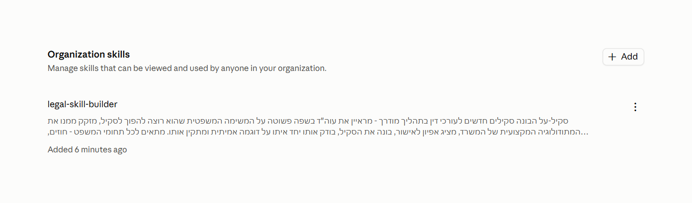
הסקיל ברשימה הארגונית
- 1 הסקיל שהעליתם, ומתחתיו התיאור שלו - התיאור נשלף מתוך קובץ ה-
SKILL.md, ולכן שווה לכתוב אותו טוב. מרגע ההעלאה הסקיל זמין לכל עורכי הדין במשרד. - 2 חותמת הזמן
Added. כך יודעים מתי כל סקיל הצטרף.
שלב 5 · בודקים איך הסקיל נראה אצל עו"ד במשרד:
זו הבדיקה שסוגרת את הפרק: לוחצים Back to app, נכנסים ל-Settings ואז ל-Skills, ורואים את הסקיל שהעליתם ברשימה שלכם.
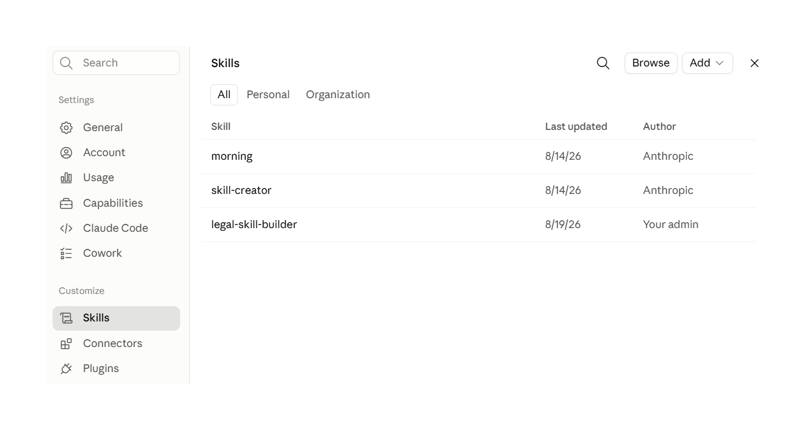
אותו סקיל, ברשימה של עוה"ד
- 1 שלוש הלשוניות שהופיעו מעל הרשימה -
All,Personalו-Organization. הן מופיעות ברגע שיש סקיל ארגוני ראשון. - 2 הסקיל שהועלה, ברשימה של עוה"ד.
- 3 עמודת
Author: אצל הסקיל הארגוני כתובYour admin. - 4 הסקיל, עם סימון הארגון לצידו. כך עוה"ד יודע שהוא לא העלה אותו בעצמו.
- 5 המתג שמאפשר לו לכבות אותו אצלו. למחוק הוא לא יכול.
ברשימה של עוה"ד, בעמודת Author, כתוב ליד הסקיל הארגוני Your admin - כך הוא יודע שהמשרד העלה אותו, ולא הוא.
ומעל הרשימה הופיעו עכשיו שלוש לשוניות - All, Personal ו-Organization - שמפרידות בין הסקילים האישיים לארגוניים. הן מופיעות ברגע שיש במשרד סקיל ארגוני ראשון.
ומה שעוה"ד יכול לעשות עם סקיל ארגוני: לכבות אותו אצלו, אם הוא לא רלוונטי לעבודה שלו. למחוק הוא לא יכול.
ומה עושים אם הסקיל שהעליתם אינו טוב:
מעלים גרסה מתוקנת במקומו.
וכדי שזה לא יקרה - בודקים לפני ההפצה, ולא אחריה. אבל כאן יש מלכוד קטן: סקיל שמועלה לספרייה הארגונית מגיע לכל המשרד מיד, ואין שלב ביניים.
ולכן הבדיקה נעשית לפני ההעלאה. שומר הסף משתף את הסקיל ישירות עם שלושה קולגות - זה מה שמתג Skill sharing מאפשר - הם עובדים איתו שבוע, ורק אז הוא עולה לספרייה הארגונית.
שלושה ולא אחד: אדם אחד שמצא שזה עובד אצלו לא מוכיח כלום. שלושה שעבדו איתו על שלושה תיקים שונים כן.
נותנים למחלקה שלמה את כל הכלים בפעולה אחת
פלאגין הוא חבילה. בתוכה כמה סקילים שנארזו יחד, ולפעמים גם פקודות וחיבורים - והיא מגיעה לאדם אחד בהתקנה אחת.
ולמה זה עדיף על להפיץ סקילים אחד-אחד: למחלקת נדל"ן צריך ניתוח הסכמי מכר, מילוי טפסי טאבו ובדיקת נסח. שלושה סקילים נפרדים זה שלוש הפצות ושלוש הזדמנויות לשכוח אחד - וחבילה אחת בשם "נדל"ן" זו פעולה אחת.
שלב 1 · נכנסים למסך הפלאגינים:
כדי להגיע למסך הפלאגינים, לוחצים באותו סרגל על Plugins - הוא יושב תחת אותה כותרת Libraries & Access, שורה אחת מעל Connectors:
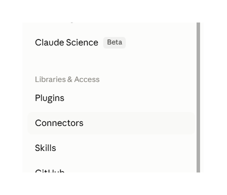
הדרך למסך הפלאגינים: הפריט Plugins בסרגל
- 1 הפריט
Plugins. לוחצים עליו, והמסך נפתח. הסרגל ארוך ומוצג כאן רק החלק הרלוונטי - הקישור שמתחת לצילום פותח את הסרגל כולו.
ואחרי הלחיצה נפתח מסך הפלאגינים:
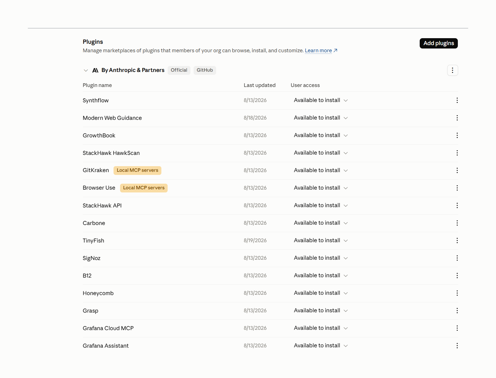
מסך הפלאגינים של הארגון
- 1 הכפתור
Add plugins. מכאן מוסיפים קטלוג נוסף, ולזה נגיע רק אם תצטרכו. - 2 הקטלוג המובנה,
By Anthropic & Partners. הוא מגיע עם המוצר, ואף אחד במשרד לא הכניס אותו לשם. התוויתOfficialשלידו אומרת שזהו קטלוג רשמי. - 3 העמודה
User access. כאן כתוב, לכל חבילה, מה עורכי הדין במשרד רשאים לעשות איתה - ומכאן גם משנים את זה.
שלב 2 · מגלים שכבר קיים אצלכם קטלוג:
באותו מסך Plugins, בלי לעבור לשום מקום, כבר יושב קטלוג אחד: By Anthropic & Partners. אף אחד במשרד לא הכניס אותו לשם - הוא מגיע עם המוצר, והתווית Official שלידו אומרת שזהו קטלוג רשמי של Anthropic ושל שותפיה.
ובתוכו רשימה של חבילות מוכנות, ולצד כל אחת מהן, בעמודה User access, כתוב מה עורכי הדין במשרד רשאים לעשות איתה.
שלב 3 · בוחרים איך כל חבילה מופצת:
גם הבחירה הזו נעשית מאותו מסך Plugins. בשורה של כל חבילה, בעמודה User access, כתוב המצב הנוכחי שלה. לחיצה עליו פותחת תפריט, ובו ארבעת המצבים:
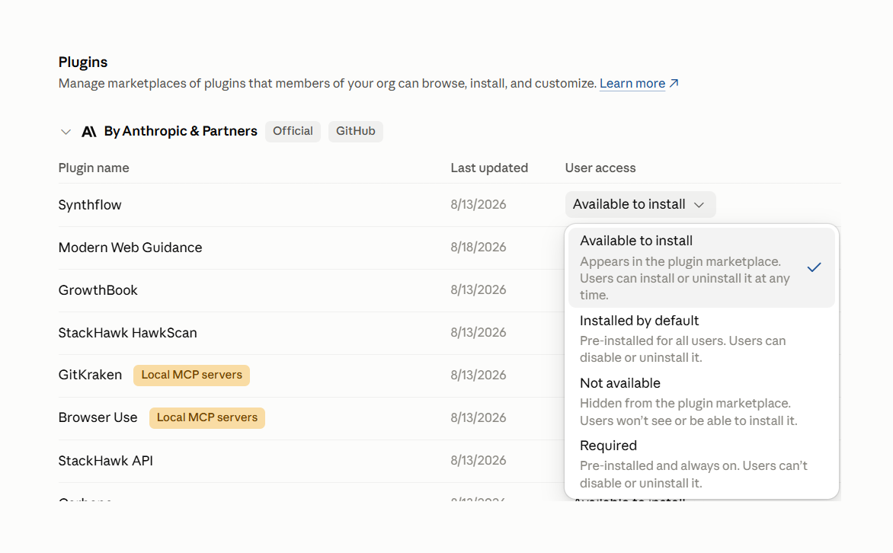
תפריט מצבי ההפצה, פתוח
- 1 השורה של
Synthflow, שבה לחצנו עלAvailable to installבעמודהUser access. מהלחיצה הזו נפתח התפריט. - 2 התפריט, ובו ארבעת המצבים. ליד המצב הפעיל כרגע מופיע סימן וי, ומתחת לשם של כל מצב כתוב בשורה קטנה מה הוא עושה.
- 3 מותקן כברירת מחדל. מגיע לכולם וניתן להסרה.
- 4 חובה. מגיע לכולם ולא ניתן להסרה.
- 5 זמין בקטלוג. מי שרוצה מתקין בעצמו, וזו נקודת ההתחלה שאנחנו ממליצים עליה.
- 6 לא זמין. מוסתר לגמרי.
וזה מה שכל מצב אומר, לפי הסדר שבו הם מופיעים בתפריט:
Available to install (זמין להתקנה) · החבילה מופיעה בקטלוג, וכל עו"ד מתקין ומסיר אותה בעצמו, מתי שירצה. זה המצב שכל החבילות מגיעות בו.
Installed by default (מותקן כברירת מחדל) · מגיעה מותקנת אצל כולם, וכל אחד רשאי לכבות או להסיר אותה אצלו.
Not available (לא זמין) · מוסתרת מהקטלוג. איש אינו רואה אותה, ואיש אינו יכול להתקין אותה.
Required (חובה) · מגיעה מותקנת אצל כולם ופועלת תמיד. אי אפשר לכבות אותה ואי אפשר להסיר.
שלב 4 · בודקים איך זה נראה אצל עו"ד במשרד:
עוה"ד פותח את זה מחלון ההגדרות שלו: לוחצים על השם בפינה, Settings, ובסרגל Plugins. ברשימה הוא רואה מה כבר מותקן אצלו:
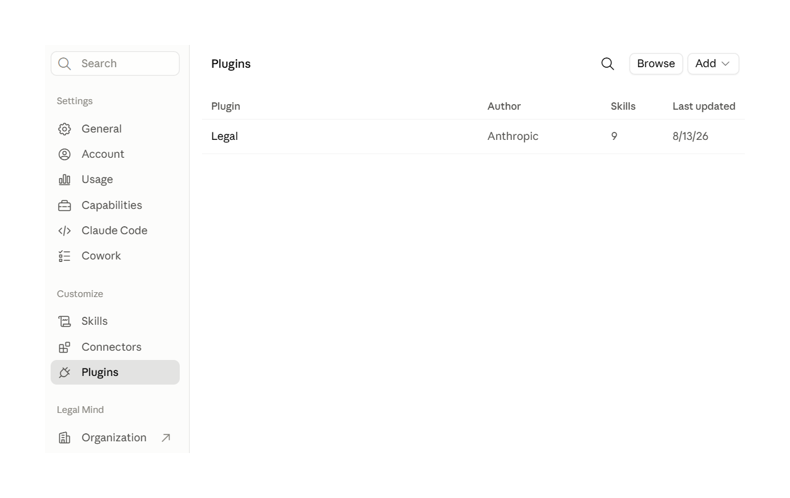
רשימת החבילות המותקנות אצל עוה"ד
- 1 החבילה
Legalשכבר מותקנת, ובעמודתSkillsכתוב כמה סקילים היא הביאה איתה - תשעה. - 2 החבילה בקטלוג.
- 3 Install. זה מה שהוא רואה כשהמצב הוא זמין בקטלוג.
ולחיצה על Browse שלמעלה פותחת את הקטלוג, ושמו Directory:
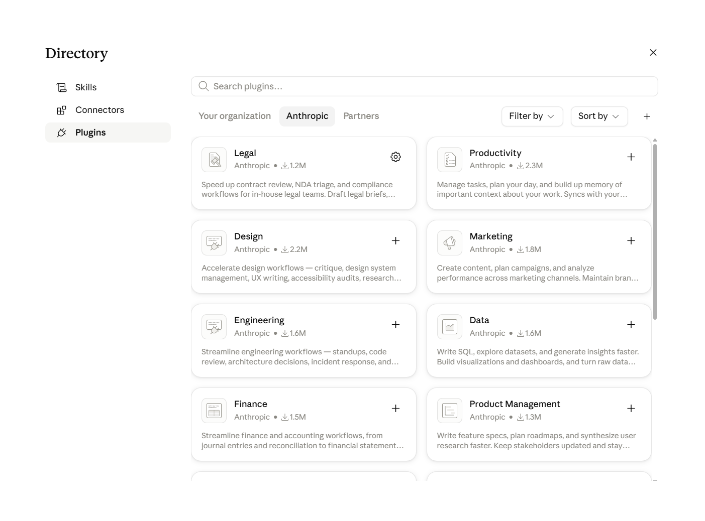
הקטלוג, כפי שעו"ד במשרד רואה אותו
- 1 שלוש הלשוניות:
Your organization,Anthropicו-Partners. חבילות שהמשרד יפיץ יופיעו בלשונית הראשונה. - 2 החבילה
Legal, ובמקום+יש לה גלגל שיניים - כי היא כבר מותקנת. - 3 כפתור
+על חבילה שאינה מותקנת. לחיצה עליו מתקינה אותה - וזה מה שקורה כשהמצב הואAvailable to install.
חבילה שמצבה Available to install מופיעה בקטלוג עם כפתור + - עוה"ד לוחץ, והיא מותקנת אצלו. וחבילה שכבר מותקנת מציגה גלגל שיניים במקום.
ועוד דבר ששווה לדעת מראש, כדי שלא תחפשו: אי אפשר לקבוע מצב הפצה אחד למחלקה אחת ומצב אחר לשאר המשרד. המצב שבחרתם חל על כל הארגון, ומי שצריך חלוקה כזו זקוק למנוי Enterprise.
קובעים כלל אחד שיחול על כל שיחה במשרד
שיחה היא חלון אחד של התכתבות עם Claude, ועו"ד פותח כמה כאלה ביום. הפרק הזה עוסק בכלל אחד שיחול על כולן - על כל שיחה, של כל עו"ד, בכל תיק, בלי שאף אחד יצטרך לכתוב אותו מחדש.
ואלה הדברים שאתם רוצים שיקרו בכל תשובה.
שהתשובות ייכתבו בעברית משפטית תקנית. שתוצר שמיועד ללקוח יישא הסתייגות שאין מדובר בייעוץ משפטי. שהפניות לסעיפי חוק ייכתבו בפורמט אחיד.
אלה לא שיטות עבודה - אלה כללי בית. והמקום שלהם הוא ההוראות הארגוניות.
ובמה זה שונה מסקיל: סקיל אומר איך לבצע משימה מסוימת. הוראה ארגונית אומרת איך המשרד מדבר, בלי קשר למשימה.
שלב 1 · חוזרים למסך Organization and access:
כדי לחזור למסך הזה, לוחצים בסרגל על Organization and access - זה המסך שכבר הייתם בו בפרק 01, כשהגדרתם איך אנשים מצטרפים:
הדרך למסך ההצטרפות: הפריט Organization and access בסרגל
- 1 הפריט
Organization and access. לוחצים עליו, והמסך נפתח. הסרגל ארוך ומוצג כאן רק החלק הרלוונטי - הקישור שמתחת לצילום פותח את הסרגל כולו.
ואחרי הלחיצה נפתח המסך:
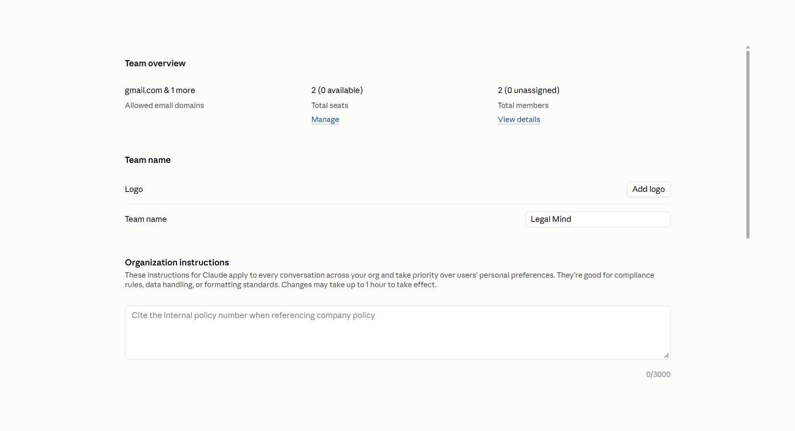
מסך Organization and access, ובו אזור ההוראות הארגוניות
- 1 השורה
Team name, ובה שם המשרד. זה אותו מסך שהכרתם מההקמה - אם כתוב בה שם המשרד שלכם, אתם במקום הנכון. - 2 אזור
Organization instructions. כאן נכתבים כללי הבית של המשרד. שימו לב שכבר במסך עצמו כתוב שההוראות חלות על כל שיחה בארגון.
אזור ההוראות הארגוניות יושב באותו עמוד, מתחת לשם הארגון.
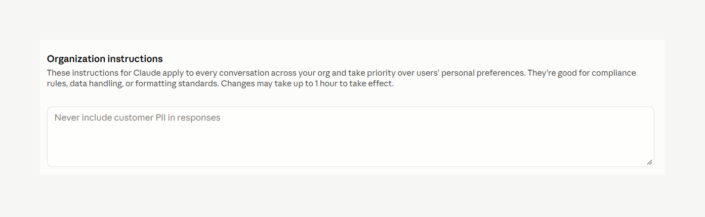
אזור ההוראות הארגוניות, ריק
- 1 תיבת הכתיבה, ריקה.
שלב 2 · כותבים את ההוראות:
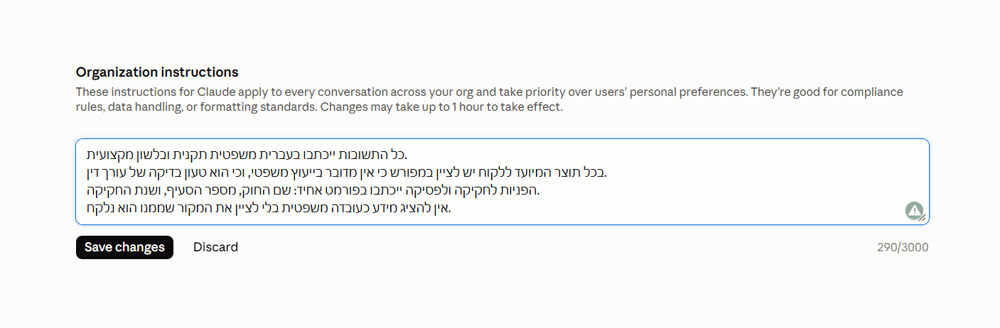
ההוראות בתיבה, רגע לפני השמירה
- 1 התיבה עם כללי הבית שהודבקו. ארבע שורות, וזה כל מה שצריך.
- 2 המונה. 290 תווים מתוך 3,000 - כללי בית אמיתיים תופסים עשירית מהמקום.
- 3 שני הכפתורים שהופיעו ברגע שהתחלתם לכתוב:
Save changesששומר, ו-Discardשמוחק את מה שכתבתם עכשיו. - 4 הטקסט שנכתב.
- 5 מונה התווים. המגבלה היא כשלושת אלפים.
ושימו לב למונה התווים שבפינת התיבה. המגבלה היא שלושת אלפים תווים - וזה מספיק לכללי בית, ולא מספיק למתודולוגיה. מי שמנסה לדחוס לשם שיטת עבודה שלמה - מקומה בסקיל, לא כאן.
שלב 3 · שומרים, ולא נבהלים:
ברגע שהתחלתם לכתוב בתיבה, הופיעו מתחתיה שני כפתורים: Save changes ששומר, ו-Discard שמוחק את מה שכתבתם עכשיו. לוחצים על Save changes, ובתחתית המסך מופיעה לכמה שניות הודעת אישור:
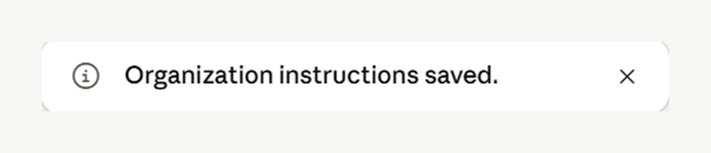
הודעת האישור שמופיעה בתחתית המסך
- 1 ההודעה
Organization instructions saved. היא מופיעה לכמה שניות ונעלמת - ואם ראיתם אותה, ההוראות נשמרו. - 2 כפתור השמירה.
- 3 האישור. וגם אחריו, ההטמעה עשויה לקחת עד שעה.
השמירה מיידית, וההשפעה לא. לפי התיעוד הרשמי, עדכון של ההוראות הארגוניות עשוי להיקלט עד שעה בכל מוצרי Claude.
אז אם כתבתם הוראה ופתחתם שיחה ושום דבר לא השתנה - זה לא אומר שהיא לא נקלטה. חכו, ובדקו שוב.
ואיך בודקים שההוראה הארגונית באמת עובדת:
פותחים שיחה חדשה ומבקשים משהו שההוראה אמורה לשנות.
אם כתבתם שכל תוצר ללקוח יישא הסתייגות - בקשו טיוטת מכתב ללקוח, וראו אם ההסתייגות שם. אם היא לא שם ועברה שעה, בדקו שההוראה נשמרה, ולא נשארה בתיבה בלי שנלחץ Save changes.
שואלים שאלה אחת ומקבלים תשובה מכל מקורות המשרד
ולמה חיפוש ארגוני משנה את העבודה במשרד:
כי הידע של המשרד לא יושב במקום אחד. חלק בדרייב, חלק במיילים, חלק בשיחות, וחלק בראש של מי שטיפל בתיק לפני שנתיים.
וכשמגיעה שאלה, מישהו צריך לזכור איפה לחפש.
זה מה שהחיפוש הארגוני מחליף: שואלים שאלה אחת, והוא עובר על כל המקורות המחוברים.
ואם תראו בתיעוד את השם Enterprise search - זה השם הרשמי של החיפוש הזה. המילה Enterprise שם היא חלק משם היכולת, ולא שם של מנוי - והיכולת קיימת גם במנוי Team.
שלב 1 · מוצאים את החיפוש הארגוני בסרגל הצד של Claude:
החיפוש הזה אינו יושב בעמוד הניהול אלא ב-Claude עצמו - במסך הרגיל שבו כולם עובדים. בסרגל הצד, תחת הכותרת Pinned, מופיעה שורה עם שם המשרד שלכם - אצלנו היא נקראת Ask Legal Mind:
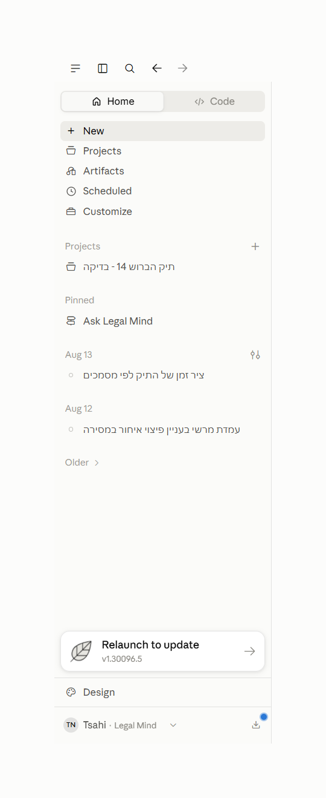
החיפוש הארגוני בסרגל הצד הראשי של Claude
- 1 השורה
Ask Legal Mind, תחת הכותרתPinned. אצלכם יופיע שם המשרד שלכם במקום Legal Mind. הוא מוצמד לכולם כברירת מחדל, ולחיצה עליו פותחת את החיפוש.
שלב 2 · משלימים את ההגדרה, לפני שהצוות נוגע:
בפעם הראשונה שה-Owner לוחץ על השורה הזו, עוד לא נפתח חיפוש - נפתח מסך פתיחה, והוא ההזדמנות להגדיר הכל לפני שהצוות נכנס:
מסך הפתיחה של החיפוש, בכניסה הראשונה של ה-Owner
- 1 התווית עם שם המשרד. המסך הזה שייך לארגון כולו, לא לחשבון שלכם אישית.
- 2 הכפתור
Set up for your org. מכאן מתחילה ההגדרה. - 3 הקישור
Disable. משרד שמחליט שהוא לא רוצה את החיפוש - מכבה אותו מכאן לכולם. - 4 אזור בחירת הקונקטורים. בלי להשלים אותו, הצוות יקבל תוצאות ריקות.
לוחצים על Set up for your org, ונפתח מסך אחד ובו שלוש שורות - כל שורה היא סוג מקור שהחיפוש ישלוף ממנו:
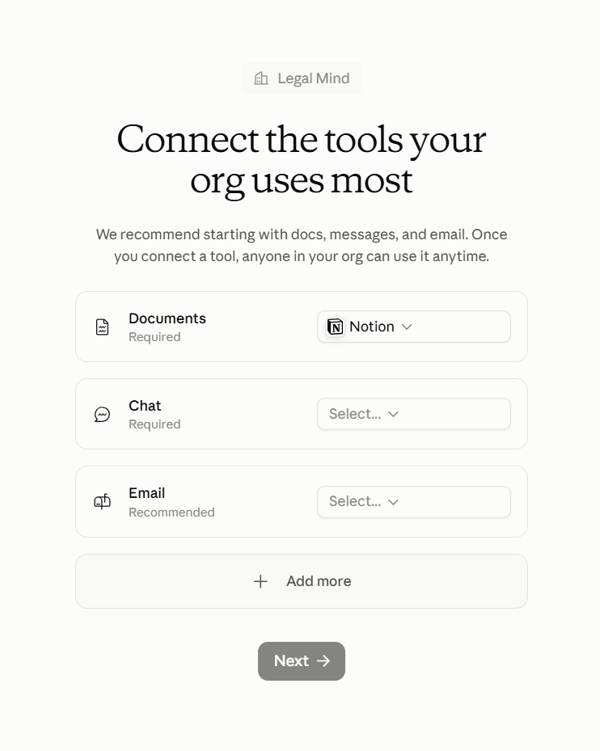
מסך בחירת המקורות של החיפוש
- 1 השורה
Documents, ולידה כתובRequired. כאן בוחרים את הדרייב שבו יושבים קבצי המשרד. - 2 השורה
Chat, גם היאRequired. כאן בוחרים את התוכנה שבה המשרד מתכתב. - 3 השורה
Email, מסומנתRecommended- מומלץ ואינו חובה. - 4 הכפתור
Next, שממשיך לחיבור עצמו.
מסמכים (Documents) · הדרייב שבו יושבים קבצי המשרד. ליד השורה כתוב Required - חובה לבחור.
צ'אט (Chat) · התוכנה שבה המשרד מתכתב. גם היא Required.
ומייל (Email) · מסומן Recommended - מומלץ, ואינו חובה.
ושימו לב למשפט שכתוב במסך עצמו: ברגע שמחברים כלי, כל אחד בארגון יכול להשתמש בו. זו בדיוק הסיבה שעושים קודם סדר בהרשאות במקורות, כמו שכתוב בעמדת Legal Mind שבסוף הפרק.
בוחרים בכל שורה את הכלי של המשרד, ולוחצים Next.
שלב 3 · ומכאן הצוות יכול להשתמש:
חוזרים מעמוד הניהול ל-Claude עצמו - לוחצים על Back to app שבראש הסרגל - ופותחים את החיפוש מאותה שורה שראינו בשלב 1. שואלים שאלה אחת, והחיפוש עונה ומציין ליד כל פרט מאיזה מקור הוא נשלף.
ובפעם הראשונה שעו"ד נכנס לחיפוש, הוא יתבקש לחבר את עצמו למקורות - פעם אחת בלבד, ומאז החיבור נשמר.
ומה עושים כשעו"ד מקבל תוצאות ריקות:
זה כמעט תמיד אחד משניים.
או שהוא לא חיבר את עצמו לכלים בכניסה הראשונה, ואז אין לו למה להתחבר.
או שאין לו הרשאה למקור עצמו. החיפוש מכבד את ההרשאות שכבר קיימות - הוא לא ייתן לו לראות תיקייה שהוא לא היה יכול לפתוח לבד.
ובשני המקרים התשובה הריקה נכונה, והבעיה במקום אחר.
מי מקבל איזה מושב, ומה האדמין מכבה לכולם
ולמה יש שני סוגי מושבים:
כי לא כולם עובדים באותה עוצמה.
עו"ד שמריץ ניתוח עומק על תיק בן מאתיים עמודים מגיע לתקרת השימוש מהר. מי ששואל שלוש שאלות ביום, לא.
Standard הוא המושב הרגיל, ו-Premium נותן מכסה גדולה יותר. ואפשר לשלב ביניהם באותו ארגון.
שלב 1 · קובעים לכל אדם את סוג המושב שלו:
את זה עושים ממסך Members שהכרתם בפרק 01 - לוחצים בסרגל של עמוד הניהול על Members, תחת הכותרת People.
סוג המושב נקבע לכל אדם בנפרד. בשורה של כל עובד, בעמודה Tier, יש בורר - לוחצים עליו, ונפתחות האפשרויות.
בורר סוג המושב, פתוח
- 1 הבורר שליד כל חבר. סוג המושב נקבע לאדם ולא למשרד.
- 2 שלוש האפשרויות, ולא שתיים. No seat assigned משאיר את האדם בארגון בלי גישה ל-Claude, Standard seat הוא שימוש רגיל, ו-Premium seat נותן מכסה גדולה יותר.
ומה עוד יושב במקום אחד, ולא אצל כל עו"ד:
זו הנקודה שבה מנוי Team שונה משבעה מנויים אישיים באותו משרד.
המושבים מנוהלים ממסך אחד. מוסיפים, מסירים ומשנים סוג מושב מרשימת החברים, ולא בכל חשבון בנפרד. מי שעוזב את המשרד מוסר שם, ומושב שמתפנה חוזר לרשימה.
החיוב יושב במסך ארגוני בשם Billing, ולא מפוזר על שבעה כרטיסי אשראי. מי בדיוק ניגש אליו - זו השאלה שבה שני עמודים רשמיים סותרים זה את זה, ועליה כתבנו בפרק 01.
וההזדהות יכולה להיות ארגונית. במסך Organization and access יש אזור בשם Authentication, ובו כניסה מאוחדת Single sign-on - כלומר עורכי הדין נכנסים עם המשתמש של המשרד ולא עם סיסמה נפרדת.
ואיך קובעים תקרת הוצאה למשרד ולעו"ד:
אפשר לקבוע תקרת הוצאה, ולא רק לראות את החשבון בסוף החודש.
המסך של זה נפתח מהסרגל של עמוד הניהול, בלחיצה על Usage:
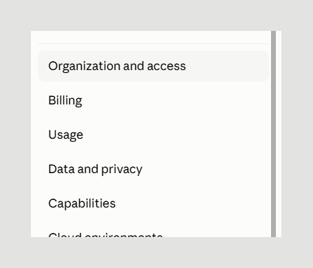
הדרך לדשבורד השימוש: הפריט Usage בסרגל
- 1 הפריט
Usage. לוחצים עליו, והמסך נפתח. הסרגל ארוך ומוצג כאן רק החלק הרלוונטי - הקישור שמתחת לצילום פותח את הסרגל כולו.
ונפתח מסך בשם Usage and spend limits. רואים בו כמה המשרד הוציא החודש, וקובעים בו את התקרה - כל עוד לא נקבעה, כתוב בה Unlimited:
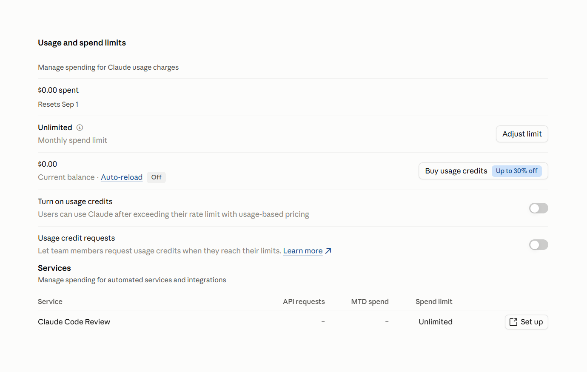
מסך Usage and spend limits
- 1 כמה המשרד הוציא החודש, ומתי המונה מתאפס.
- 2 תקרת ההוצאה החודשית. כרגע כתוב בה
Unlimited- אין תקרה - ומהכפתורAdjust limitקובעים אחת. - 3 המתג
Turn on usage credits. כבוי כברירת מחדל, ומי שמדליק אותו מאפשר שימוש בתשלום גם אחרי שמגיעים למכסה.
התיעוד של Anthropic אומר שאפשר לקבוע אותה בשתי רמות: ברמת הארגון כולו, וברמת המשתמש הבודד.
ולמשרד עורכי דין זה שווה יותר ממה שזה נשמע. מתמחה שגילה שאפשר להריץ ניתוח על תיק בן מאתיים עמודים יעשה את זה שוב ושוב, וזה לגיטימי - אבל כדאי שתדעו על זה מהתקרה ולא מהחשבונית.
זו אחת מהיכולות שמנוי אישי אינו מציע בכלל. ב-Pro וב-Max אין ארגון, ואין מה לתחום.
שלב 2 · מכבים ומדליקים יכולות לכל הארגון:
חיפוש ברשת, החיפוש הארגוני, ויכולת הרצת הקוד שסקילים תלויים בה - כל אלה נשלטים ממסך אחד, ולכל הארגון בבת אחת.
וכדי להגיע אליו, לוחצים בסרגל על Capabilities:
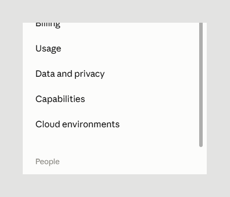
הדרך למסך היכולות: הפריט Capabilities בסרגל
- 1 הפריט
Capabilities. לוחצים עליו, והמסך נפתח. הסרגל ארוך ומוצג כאן רק החלק הרלוונטי - הקישור שמתחת לצילום פותח את הסרגל כולו.
ואחרי הלחיצה נפתח מסך היכולות:
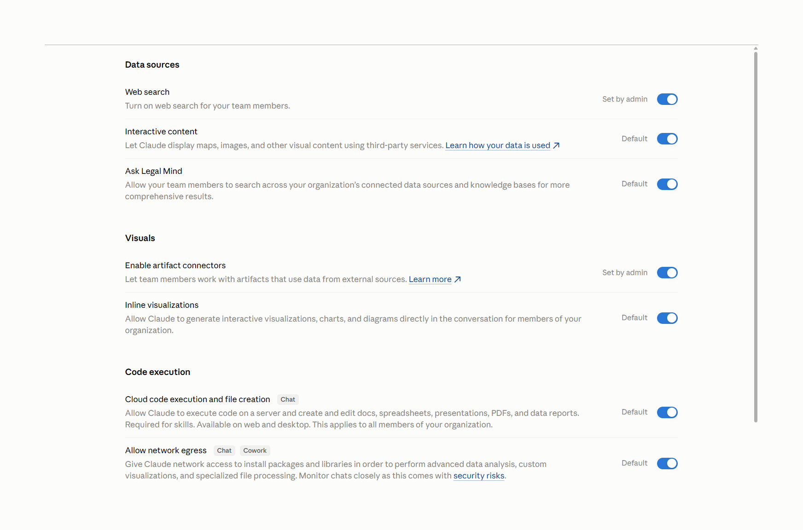
מסך היכולות של הארגון
- 1 המתג של
Web search. מה שכבוי כאן, כבוי אצל כל עורכי הדין במשרד. - 2 המתג של החיפוש הארגוני - הוא מופיע כאן בשם המשרד שלכם.
- 3
Cloud code execution and file creation. אותו מתג שפגשתם במסך הסקילים - בלעדיו סקילים לא עובדים.
ובהמשך אותו מסך, למטה, יושבות ההגדרות של הרצת הקוד - כולל אזהרת אבטחה שכתובה על המסך עצמו, ורשימת הדומיינים שהקוד רשאי לגשת אליהם:
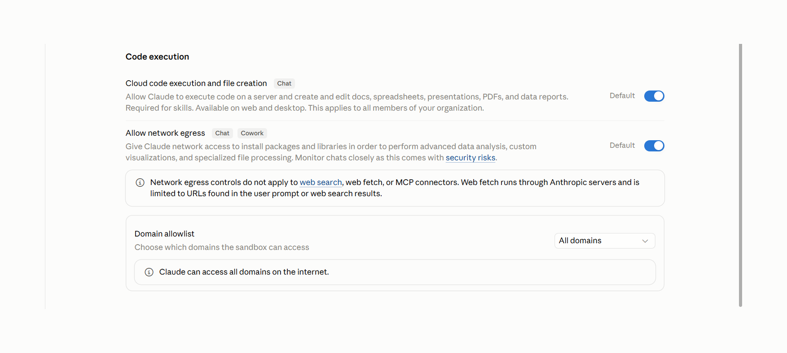
הרצת קוד וגישה לרשת, בהמשך אותו מסך
- 1
Allow network egressוהאזהרה שלצידו. המסך עצמו כותב שזה מגיע עם סיכוני אבטחה, ומפנה לקרוא עליהם. - 2
Domain allowlist, וכרגע נבחר בוAll domains- כלומר הקוד ש-Claude מריץ רשאי לגשת לכל האינטרנט. משרד שרוצה לצמצם, מצמצם כאן.
ואילו החיבורים עצמם - יומן, מייל, דרייב - אינם במסך הזה. הם מנוהלים ממסך נפרד בשם Connectors, שיושב בסרגל תחת Libraries & Access. וכאן נסגרת שאלה שנפתחה במדריך 1: מי קובע אילו חיבורים בכלל זמינים לעורכי הדין - התשובה: המשרד, מהמסך ההוא, ולא עוה"ד אצלו.
רואים מי במשרד באמת משתמש, וכמה
ולמה נתוני השימוש אינם רק מספרים:
כי החלטה על שדרוג מושב, על הדרכה נוספת, ועל האם ההשקעה מחזירה את עצמה - כולן נשענות על אותם נתונים.
ובלעדיהם מנחשים.
שלב 1 · פותחים את דשבורד השימוש:
הדשבורד הזה לא נפתח מעמוד הניהול, אלא מתפריט החשבון. לוחצים על שמכם בפינה השמאלית התחתונה, ובתפריט שנפתח לוחצים על Analytics:
תפריט החשבון פתוח
- 1 Organization settings. זו הדרך הקצרה - לחיצה אחת מכאן, במקום לעבור דרך Settings ולגלול עד למטה.
- 2 Analytics. גם לדשבורד השימוש יש קיצור מכאן, ונחזור אליו בפרק 07.
- 3 השורה שעליה לוחצים כדי לפתוח את התפריט, בפינה השמאלית התחתונה.
ונפתח מסך שמראה מי משתמש, כמה, ובאילו יכולות:
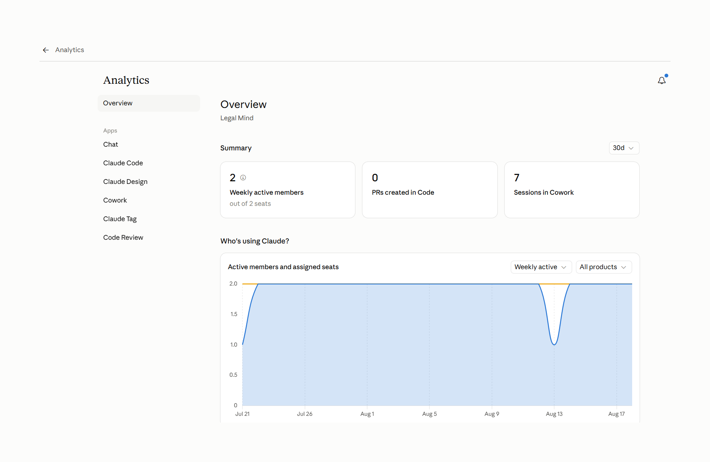
דשבורד השימוש
- 1 הרשימה שמשמאל.
Overviewנותן את התמונה הכללית, ומתחתיו פירוט נפרד לכל מוצר - הצ'אט, Claude Code, קו-וורק והשאר. - 2 שלושת המספרים של התקופה, ובראשם כמה חברים פעילים מתוך כמה מושבים. את התקופה קובעים בבורר שמימין (
30d- שלושים הימים האחרונים). - 3 הגרף
Active members and assigned seats. הקו הכתום הוא המושבים ששולמו, והכחול מי שפעיל בפועל - והפער ביניהם הוא מושבים שמשלמים עליהם בלי שימוש.
ולא להתבלבל עם Usage שבסרגל עמוד הניהול - שם יושב מסך הכסף, זה שקובע תקרת הוצאה, וראינו אותו בפרק 06.
שלב 2 · מייצאים את הנתונים, ויש שני ייצואים שונים:
שני הייצואים נעשים מהמסכים שכבר פתוחים - האחד ממסך Members והשני מדשבורד Usage - ואין צורך במסך חדש.
ייצוא רשימת החברים · שם, מייל, תפקיד וסוג מושב. זה מה שצריך לביקורת תקופתית של מי בארגון ובאיזה תפקיד.
וייצוא נתוני השימוש · שורה לכל משתמש ולכל מודל, כולל מספר הבקשות והעלות בפועל. זה מה שצריך כשמחליטים על שדרוגי מושבים.
כפתור הייצוא במסך החברים
- 1 כפתור הייצוא. הקובץ כולל שם, מייל, תפקיד וסוג מושב.
ומה עושים עם הנתונים שראיתם:
שלוש תגובות אפשריות, ולכל אחת סימן משלה:
מישהו שלא נכנס בכלל · זו לא בעיית מושב, זו בעיית הדרכה. שווה לשאול אותו מה עצר אותו.
מישהו שנתקל בתקרה שוב ושוב · זה מועמד ל-Premium, וזו בדיוק ההחלטה שהמתנו לה חודש.
מחלקה שלמה שלא נוגעת · סימן שהסקיל שהפצנו לא מתאים לעבודה שלה, ולא שהאנשים בה מתנגדים.
כשמשהו לא עובד בהגדרות המשרד
אני לא רואה את מסכי ניהול הארגון בכלל:
זו שאלה של הרשאה, לא תקלה. בדקו את התפקיד שלכם ב-Settings ואז Account. אם כתוב User, אין לכם גישה. פרק 01.
ההעלאה נכשלת עם שגיאה על SKILL.md:
הקובץ שלכם אורז כמה סקילים יחד, וההעלאה מקבלת אחד בלבד. מפרקים לקובץ zip נפרד לכל סקיל, כש-SKILL.md ברמה העליונה. פרק 02.
העליתי סקיל ארגוני והוא לא הופיע אצל אף אחד:
בדקו במסך הסקילים של הארגון ששני מתגים דלוקים: Skills, ו-Cloud code execution and file creation. בלי השני שום סקיל אינו עובד. פרק 02.
עובד אומר שהסקיל הארגוני נעלם לו:
הוא כיבה אותו אצלו. אי אפשר למחוק סקיל ארגוני, רק לכבות - ולכן הוא עדיין שם, והוא יכול להדליק אותו בחזרה.
כתבתי הוראה ארגונית והיא לא משפיעה:
שתי אפשרויות. או שהעדכון עוד לא נקלט - זה לוקח עד שעה - או שהיא מנוסחת רכה מדי. נסו לנסח אותה כהוראה ולא כהמלצה. פרק 04.
Ask Your Org לא מחזיר תוצאות לעובד מסוים:
או שהוא לא חיבר את עצמו לכלים בכניסה הראשונה, או שאין לו הרשאה למקור עצמו. החיפוש לא נותן יותר ממה שכבר מותר לו. פרק 05.
עובד אומר שיכולת שהייתה לו נעלמה:
בדקו במסך היכולות אם מישהו כיבה אותה לכל הארגון. פרק 06.
חיפשתי תפקידים מותאמים ולא מצאתי:
הם אינם קיימים במנוי Team, אלא רק במנוי Enterprise. פרק 01.
חמש הטעויות שמשרדים עושים
כל אחת מהן נראתה הגיונית למי שעשה אותה.
1 · פתחו את כל הפרויקטים לכלל הארגון כדי שיהיה נוח. במקום פרטי כברירת מחדל, ופתיחה רק של מאגרי ידע בלי מידע לקוח. מדריך 1, פרק 02.
2 · חמישה אנשים העלו את אותו סקיל בחמש גרסאות. במקום גרסה אחת שעוברת דרך שומר הסף. פרק 02.
3 · ציפו שההקשר יעבור בין שיחות בפרויקט. בלי להוסיף את המידע למאגר הידע. מדריך 1, פרק 05.
4 · חילקו תפקיד Owner לחצי מהמשרד ליתר ביטחון. במקום מיפוי מסודר, ולא יותר משניים. פרק 01.
5 · קנו מושבי Premium לכולם מראש. במקום להתחיל ב-Standard ולשדרג לפי נתונים. פרק 06.
מסלול 30 יום
זו לא רשימת משאלות, זו תוכנית ביצוע. מי שיעשה אותה לפי הסדר יגיע לסוף החודש עם משרד שעובד באותה שיטה.
שבוע 1 הגדרת התפקידים לפי המיפוי · מינוי שומר הסף · כתיבת ההוראות הארגוניות · ופתיחת הפרויקט הארגוני הראשון, בנק הערות או נהלים.
שבוע 2 העלאת הסקיל הארגוני הראשון דרך שומר הסף · בדיקתו עם שלושה משתמשים לפני שהוא מגיע לכולם · וחיבור יומן ומייל.
שבוע 3 הדרכת כלל הצוות על פרויקטים והרשאות, לפי מדריך 1 · והשלמת הגדרת החיפוש הארגוני בידי ה-Owner.
שבוע 4 בחינת נתוני האנליטיקות · החלטה על שדרוגי מושבים לפי מה שראיתם ולא לפי תחזית · והוספת סקיל שני ופלאגין מחלקתי ראשון.
מה המשרד יודע לעשות עכשיו, ולאן ממשיכים מכאן
מה שאתם יודעים לעשות עכשיו:
- להבחין בין תפקיד ארגוני להרשאה בפרויקט, ולא לערבב ביניהם.
- למפות תפקידים במשרד בלי לחלק
Ownerלכולם. - להעלות סקיל ארגוני, ולהשאיר את מתג השיתוף כבוי.
- להפיץ חבילה שלמה למחלקה, ולהתחיל במצב
Available to install. - לקבוע כללי בית שחלים על כל שיחה במשרד, ולבדוק שהם עובדים.
- להפעיל חיפוש ארגוני אחרי שעשיתם סדר בהרשאות במקורות.
- ולקרוא את נתוני השימוש ולדעת מה כל מספר אומר.
והתוצר המודפס:
טבלת ההחלטה וחמש הטעויות נמצאות גם בדף התרגול להדפסה, המקושר ממרכז המדריכים. שווה לתלות אותו מול העיניים בחודש הראשון.
ולסיום, כמו בפתיחה: כל שאלה על פרטיות, DPA ואבטחת מידע נמצאת במדריך של Legal Mind על המעבר הבטוח למנוי Team, מדריך 1 סעיף 2.